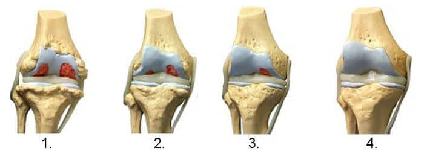

- Un nouveau remède contre le cancer
- Bulletin d'été
- Produits cosmétiques sûrs
- Bulletin météo
- Actualités des derniers mois
- Information sportive
- Des fluctuations de pression atmosphérique sont attendues
- Informations touristiques
- Industrie pharmaceutique
- Pourquoi les médecins peuvent-ils aller en prison?
- Actualités des célébrités
Attention!!! Si vous souffrez de douleurs articulaires, voici une recommandation du chef du département d'orthopédie et de traumatologie de l'Institut national de rhumatologie concernant une option de traitement pratiquement gratuite sans intervention médicale!
Arthralgie
Laissez les escrocs seuls, ils sont intéressés à prescrire le médicament le plus cher et le plus inefficace.
En août 2021, des rhumatologues ont été arrêtés à Zurich, Berne, Genève et dans d'autres villes suisse. Selon l'autorité d'instruction, 102 personnes, y compris des médecins généralistes et des chefs de services de rhumatologie, et même plusieurs ministres, ont été placées en garde à vue.
La cause de ces arrestations n'a été rendue publique que récemment par l'autorité chargée de l'enquête, et cette cause est choquante. Pendant 12 ans, les rhumatologues ont trompé leurs patients en leur prescrivant des médicaments inutiles et coûteux. Malheureusement, cette pratique est largement répandue dans tout le pays. Selon l'autorité chargée de l'enquête, plus d'un million de victimes pourraient avoir été impliquées dans la fraude des médecins, les dommages sont incalculables et, pire encore, de nombreux patients traités avec ces médicaments coûteux souffrent d'une forme d'invalidité.
On a contacté monsieur Gaspard Carnet, chef du département d'orthopédie et de traumatologie de l'Institut national de rhumatologie, pour qu'il nous ait donné son avis sur la situation.
Articles liés
Interview
Gaspard Carnet
C'est monsieur Gaspard Carnet qui a initié la réinspection des rhumatologues. [...]
-- Monsieur Carnet, qu'est-ce qui vient de se passer?
Ce que les pouvoirs publics auraient dû faire il y a longtemps se produit maintenant. Des maffieux en costume blanc vont aller en prison pour avoir caché pendant des années le médicament le moins cher et le plus efficace pour la restauration des articulations! Il suffit de regarder ces chiffres: plus d'un million de personnes sont mortes au cours des 12 dernières années! Des patients souffrants dont la plupart sont représentés par des retraités ont consulté un médecin en vain et n'ont pas reçu le traitement nécessaire. Les médecins les ont délibérément manipulés, sachant que le médicament qu'ils prescrivaient ne guérirait pas le patient! Cette pratique est largement répandue dans les hôpitaux privés et publics.
-- De quels médicaments parle-t-on exactement?
Il s'agit le plus souvent de médicaments de fabricants étrangers, activement promus par les chefs corrompus des services de rhumatologie. Les médecins traitants seront alors récompensés équitablement pour la prescription d'un médicament particulier. Chaque médecin a une liste de médicaments qu'il prescrit à ses patients.
Ce sont des médicaments à faible impact, tels que:
- Diprospan
- Diclofenac
- Dexamethasone
- Alflutop
- Movalis
- Mydocalm
- Meloxicam
- Prednisolon
- Teraflex
- Mucosat
- Airtal
- Chondroguard
- Artra
- Artrozan
- Fermatron
- Celebrex
- Diaflex
- Chondrolon
- Sirdalud
- Ketorolac
- Chondroxide
- Flamax
- Allopurinol
- Flexen
- Fermatron Plus
- Artrosilen
-- Mais ces médicaments sont-ils disponibles dans les pharmacies en Suisse?
Oui, ils sont disponibles. Toutefois, cela ne signifie pas que ces produits aident réellement à traiter les articulations. Vous savez que les pharmacies sont aussi des unités commerciales. En fait, on pourrait dire qu'elles sont les mêmes que les magasins ordinaires. Elles vendent ce qui se vend bien et fait du profit. Ces médicaments se vendent bien pour au moins deux raisons, qui n'ont rien à voir avec leur efficacité.
Il y a beaucoup de médicaments inutiles sur les étagères de pharmacie et aucun médicament réellement efficace pour traiter les articulations.
Premièrement, les médicaments sont prescrits non seulement par des médecins corrompus, mais aussi par des médecins honnêtes, comme nous l'avons constaté lors de diverses conférences organisées par les sociétés pharmaceutiques. Les médecins incompétents prescrivent ce que leurs collègues prescrivent et ce que les campagnes publicitaires agressives leur ont inculqué.
Il y a beaucoup de médicaments inutiles sur les étagères de pharmacie et aucun médicament réellement efficace pour traiter les articulations.
Deuxièmement, ces médicaments n'ont pratiquement pas de concurrents. Ils sont spécifiquement prescrits aux patients. En fait, il existe des médicaments efficaces, mais ils ne sont tout simplement pas disponibles dans les pharmacies. Les pharmacies ne les achètent pas, car il n'y a pas de demande. Tout est déterminé par la corruption.
Posez-vous une question: connaissez-vous quelqu'un qui a été guéri de ses problèmes d'articulation grâce à un produit de pharmacie? Quelqu'un, un ami ou un connu? Ces personnes n'existent pas! Et je vais vous expliquer pourquoi, afin que vous puissiez comprendre la complexité de la situation. Vous voyez, les fabricants de ces médicaments ne veulent tout simplement pas que vos articulations soient complètement guéries. Il est beaucoup plus rentable de vendre des médicaments qui ne soulagent la douleur que pendant une courte période, de sorte que les patients achètent ces médicaments encore et encore.
-- Et pourquoi personne n'a rien fait à ce sujet? C'est de toute évidence cruel...
Oui, l'attaque contre les personnes est évidente, mais heureusement, elle est terminée maintenant. Nous avons mis en garde à plusieurs reprises les rhumatologues contre leurs violations, mais ils ne nous ont pas pris au sérieux. Eh bien, il n'est pas du tout facile d'abandonner le niveau de vie élevé et de l'argent que les sociétés pharmaceutiques garantissent. Les arrestations, y compris des médecins célèbres, se poursuivent. Malheureusement, nous n'avons aucune influence sur les pharmacies, mais la question est traitée au niveau législatif. Une loi sera bientôt adoptée qui obligera les pharmacies à proposer tous les médicaments approuvés. Mais cela prendra du temps.
-- Cela affirme qu'en plus des médicaments inefficaces, il existe aussi des remèdes vraiment efficaces qui aident réellement les articulations à guérir. Pouvez-vous nommer au moins une option vraiment efficace?
Certainement. Il existe, par exemple, un très bon remède capable de réparer des articulations déjà complètement détruites ainsi que d'éliminer la douleur, c’est une gel , mise au point en 2017 par des experts de l'Institut national de rhumatologie. Comme notre institut n'est pas une structure commerciale, vous pouvez acheter la gel à un prix abordable. En d'autres termes, il est moins cher que les autres médicaments disponibles en pharmacie, mais beaucoup plus efficace!

Je voudrais vous montrer les résultats d'un essai clinique de . Les résultats sont incroyables. Pour les patients souffrant de maladies articulaires, cette gel est juste un miracle.
Chez 100% des participants, la douleur est passée en 8-10 minutes.
Chez 98% des participants, l'articulation a commencé à guérir après un traitement par .
Chez 93% des participants, l'arthrite et l'arthrose ont disparu après une cure de traitement.
les a guéris
-
54 ans, femme. L’articulation est entièrement rétablie. La durée du traitement: 1,5 mois
-
Traitement de l’articulation de la hanche des hommes. 44 ans, homme. Des douleurs sévères qui avaient tourmenté le patient pendant deux ans ont finalement disparu.
-
Reconstruction de l'articulation de coude. 31 ans, femme. L'articulation est complètement guérie.
non seulement soulage la douleur dans les articulations, mais déclenche également le processus de régénération du liquide synovial. En conséquence, la couche de cartilage devient plus large et plus élastique, l'articulation se rétablit et guérit, la douleur et la rigidité disparaissent.
Sur la base des résultats des essais cliniques et de l'expérience pratique, les médecins de la Suisse considèrent comme le médicament le plus important pour le traitement des troubles articulaires et vertébraux. Ce qui est vraiment génial, c'est que les traitements par peuvent être effectués à domicile. La grande majorité des patients ne veulent plus aller chez le médecin, ce qui est compréhensible au vu des événements récents, alors seulement peut vous aider à récupérer vos articulations.

-- est-elle une pommade ou un gel?
Une biogel spéciale qui prévient la douleur et l'inflammation et arrête la destruction des articulations grâce à sa formule particulière.
La gel affecte également les articulations, le système circulatoire, les tissus conjonctifs et les tendons. Son action anti-inflammatoire augmente la résistance aux maladies.
- une percée unique brevetée des savants. Il n'y a pas d'autre gel comme celle-ci dans le monde.
Commentaires